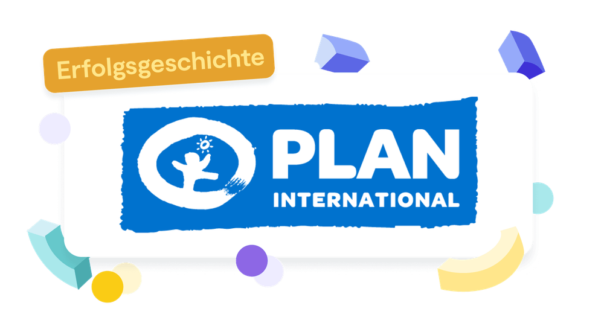

Solo
1 Zugang
299€
pro Jahr
zzgl. MwSt
Jährliche Abrechnung, jederzeit kündbar
Verantwortung wird bei Non-Profit-Organisationen wie Plan International großgeschrieben. Nicht nur gegenüber Kindern und jungen Menschen aus der ganzen Welt, sondern auch nach innen, den eigenen Mitarbeitenden gegenüber. Lassen sich die eigenen Werte mit Effizienz und begrenzten Mitteln vereinbaren? Plan International Deutschland e.V. zeigt uns, wie das gelingt.

Plan International e.V. ist als unabhängige Kinderrechtsorganisation der Entwicklungszusammenarbeit und humanitären Hilfe in über 60 Ländern mit lokalen Strukturen aktiv und setzt sich besonders für Mädchen und junge Frauen. Plan International Deutschland e.V. ist eine nationale Organisation in diesem Verbund und verantwortet insbesondere das Fundraising, erarbeitet mit den Länderbüros umfangreiche Projekte und setzt sich neben der Öffentlichkeitsarbeit für entwicklungspolitische Ziele ein.
Als neu zusammengesetztes und dynamisches Team hat man den Vorteil, noch vieles ausprobieren zu können, ohne sich an bestehende Strukturen orientieren zu müssen. Doch wo fängt man da an?
Diesen Fragen steht das Team der People and Culture Abteilung von Plan International Deutschland in Hamburg gegenüber. Durch Experimentieren und Reflektieren bahnen sie sich ihren Weg zur menschenzentrierten (und effektiven) Arbeitsroutine.
Für einen Einblick in die Arbeit von Plan International mit 9 Spaces haben wir mit Niklas Gaidetzka gesprochen. Er ist Specialist Personnel and Organizational Development in der Abteilung People and Culture bei Plan International Deutschland. „Wir sind ein kleines und ambitioniertes Team, das viel umsetzen möchte und tolle Ideen hat, wie wir die Organisation von innen heraus verändern und verbessern können“, beschreibt Niklas. „Wir können noch sehr viel miteinander aufbauen und gestalten."
Erst einmal stand eine Bestandsaufnahme der Anforderungen an. Diese sah wie folgt aus:
Mithilfe des Workshop-Baukastens von 9 Spaces hat sich dann ein Zusammenspiel aus den folgenden Tools ergeben, die ineinandergreifend die notwendigen Prozesse zur Erreichung der genannten Ziele schaffen.
Das spannungsbasierte Arbeiten ermöglicht es uns, Ideen und Inspirationen mit dem Team zu teilen – ohne dafür Meetings zu kapern, die eigentlich einen anderen Zweck erfüllen sollen. Niklas Gaidetzka, Plan International e.V.
Rollenbasiertes Arbeiten gibt uns mehr Klarheit und Sicherheit darüber, was von jeder Rolle erwartet wird. Die Rollenbilder haben uns auch geholfen, besser einzuschätzen, ob man die Ressourcen hat, um bestimmte Rollen zu übernehmen. Niklas Gaidetzka, Plan International e.V.
Die Arbeit mit OKRs hat uns sehr geholfen, einen klaren Titel für Projekte zu finden und gleichzeitig deutlich aufzulisten, welche Ergebnisse entstehen sollen. Das wiederum hat uns beim Zuschnitt der Unterprojekte unterstützt. Mithilfe der angepeilten Zielbilder konnten wir überlegen, welche Zwischenschritte erforderlich sind, um die Zielbilder bzw. Objectives zu erreichen. Niklas Gaidetzka, Plan International e.V.
Mit dem Werte Check hatten wir die Chance, unsere Arbeit (Prozesse, Services, Maßnahmen, …) kritisch dahingehend zu beurteilen, ob und in welchem Umfang wir unserem Anspruch schon genügen und wir konnten tolle Ideen entwickeln, um hier weiter voranzukommen! Niklas Gaidetzka, Plan International e.V.
Nach ausführlichem Ausprobieren, Reflektieren und Anpassen an Plan International Deutschland e.V. wurden diese Methoden der Zusammenarbeit fest in die Routinen von Niklas’ Team verankert. In Eigenregie hat sich die Gruppe selbst beigebracht, wie die Arbeit mit Spannungen, Rollen und Objective and Key Results (OKRs) am besten funktioniert – ganz ohne Input-Gebende von außen. Jede*r von ihnen weiß, wie und wo er oder sie sich am besten einbringen kann.
Das große leere Blatt mit der Überschrift „Wie wollen wir arbeiten?” hat sich mit den beschriebenen Entwicklungen gut gefüllt. Einige Ansätze wurden durchgestrichen, überschrieben oder wegradiert. Das Endprodukt kann sich sehen lassen. Das Team konnte bestehende 9 Spaces Tools für den eigenen Gebrauch nutzen und nachhaltig in ihre Prozesse integrieren, ohne das Rad neu erfinden zu müssen. „Teilweise lösen die angewendeten Methoden sogar Probleme, die wir vorher gar nicht auf dem Schirm hatten.”
Mithilfe der neuen Arbeitsweisen geben sie nicht nur sich selbst mehr Klarheit rund um Strategien und Projektumsetzung geben, sondern diese Klarheit auch in andere Ebenen der Organisation tragen. „Die OKRs haben geholfen, uns besser mit unseren internen Stakeholder*innen abzustimmen, da sie sich mit diesem Ansatz besser vorstellen konnten, was wir erreichen wollen.”
Vor allem als NGO ist die Allgegenwärtigkeit der eigenen Werte unverzichtbar. Dass die Methoden eine ständige Refokussierung erlauben und fördern, unterstützt den Verein dabei, sich selbst treu zu bleiben.
Das Baukastensystem der Workshop-Formate hat es Plan International Deutschland e.V. ermöglicht, einen individuell zugeschnittenen Prozess zu finden, der so einzigartig ist wie das Team selbst. Auch wir nehmen aus dieser Erfolgsgeschichte mit: Prozesse vor dem Hintergrund der eigenen Konstellation an Bedürfnissen und Kompetenzen zu schaffen, gelingt am besten von Innen heraus.
zzgl. MwSt
Jährliche Abrechnung, jederzeit kündbar
Zugang für mehrere Mitarbeitende in einem maßgeschneiderten Plan